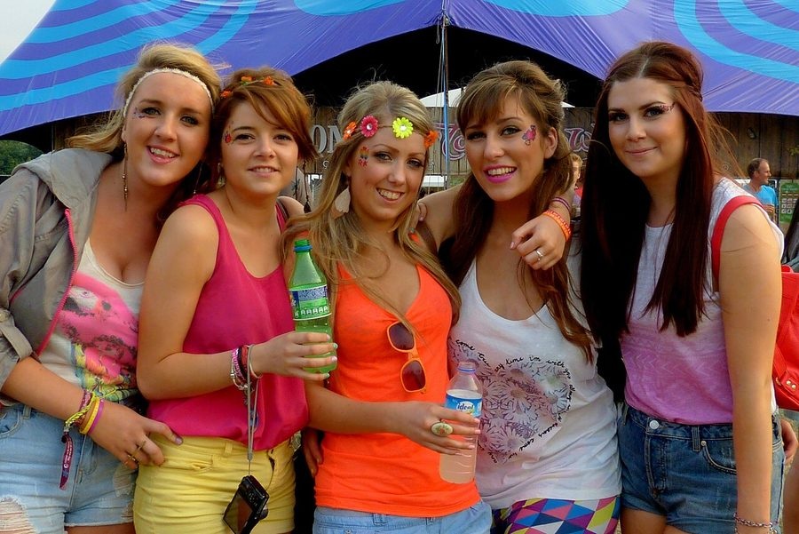

Tomorrowland fires up: pre-party site report



The first day of Belgium’s Tomorrowland festival, which has been the world’s most talked party over the past 12 months, opened its doors at 8pm Australian time for the first punters to begin strolling in. inthemix is on the ground to cover the action over the next three days, and was treated to a pre-party tour of the festival site only a few hours earlier, whisked around the different stages and given a brief glimpse of some of the fantastic stage design and production partygoers will be enjoying over the course of the festival.
The first stop was the towering Q-dance stage, around 20 metres high with the centerpiece of a wall of metal studs reaching skywards into two intertwined cobras, a slightly more modest version of the excess seen annually at the Defqon.1 Festival’s mainstage every year. The subs were being soundchecked at the time, sending reverberations through the ground strong enough to rattle your ribcage, and around the corner it led out into the beautiful grassy expanses of the De Schorre National Park, in the heart of the village of Boom, half an hour out of Brussels.
Trucks and tractors were still speeding around the site finishing off last minute preparations, with the construction taking over a month to complete in total. There’s purpose built walkways laid out over rivers, massive platforms built in front of the stages to ensure the impact on the beautiful national park is minimal, as well as flags, windmills, giant mushrooms and cupcakes, candy-cane arches and all manner of other colourful decorations everywhere you look, to help create the fantasy-land atmosphere that’s become a trademark of the event. 180,000 people are expected over the next three days.
The centerpiece of the party is the spectacular mainstage, situated in the park’s natural amphitheatre with a capacity of around 40,000 people. This year the stage’s theme is a spectacular array of fairytale books, with a massive hardcover book emblazoned with the Tomorrowland logo situated smack in the middle of the stage, moving on hinges to reveal a video screen. It’s one of the most elaborate stage designs ever, destined to really come into its own when the lights and lasers are turned on after sundown. Weigning in at 180 tonnes, it’s also the heaviest stage that’s ever been built for a dance festival.
The rest of the grounds are no less impressive, with the colourful castle that’s been erected on the arena to host curated lineups from Carl Cox, Paul van Dyk and Dave Clarke over the next three days proving particularly pleasing on the eyes. Dominated in the middle by a majestic sun with moving eyes, which seem to be watching your every move, it’s also flanked from behind by a massive ferris wheel that towers high above the stage.
inthemix has sourced a gallery full of sumptuous photos of the festival’s setup process over the past month, so feast your eyes and stay tuned for more coverage over the next three days.